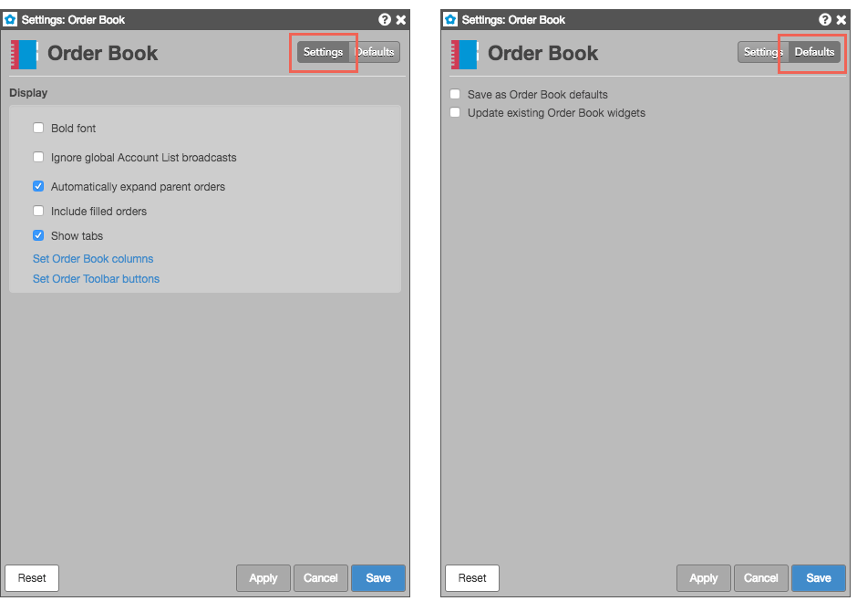
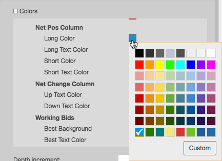

Many Trade widgets allow you to customize the content, behavior, and appearance of their respective widgets. You can access the widget settings from the widget's context menu. The Settings section lists the the things you can customize in the widget. The Defaults section provides options for saving changes you make to a widget as defaults for future widgets and to apply the changes to all other open widgets of the same type.

Some widgets, such as MD Trader and Market Grid, also let you select specific changes you want to save as widget defaults or for other currently open widgets of the same type. These widgets include a Selective update properties setting that displays a list of widget attributes you can save.
From the widget settings, you can customize the cell or column colors in the following widgets:
To customize colors:
Click the box next to an option to open the color palette and select a color. Click Custom to create a customized color.

If you want to save the changes to the widget, while not changing the default widget behavior, you can make the widget a custom widget. Saving your changes as a custom widget, allows you to create different versions of a widget for different uses. For example, you could customize a Market Grid widget one way for treasuries and another way for energies.
To save your changes as a custom widget:
Customize your widget as desired.
Right-click in the widget's title bar and select Save as custom widget from the menu.
In the Save Custom Widget dialog, enter the following information for your custom widget:
Click Save Widget.
If you want this widget to appear as an icon in search results, set it as a favorite in the Widgets menu.